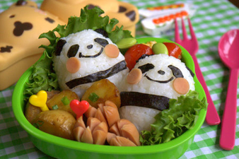

Aktuellt
Matschema Vecka 44, 25 oktober - 31 oktober
- Måndag: Chili con carne, havreris, Vegetariskt: Chili sin carne, havreris
- Tisdag: Indonesisk kycklinggratäng, bulgur, Vegetariskt: Indonesisk quorngratäng, bulgur
- Onsdag: Ugnstekt fisk, kall sås, potatis, Vegetariskt: Quornfilé, kall sås, potatis
- Torsdag: Grynkorv/korv, potatismos, Vegetariskt: Sojakorv, potatismos
- Fredag: Kassler, potatisgratäng, Vegetariskt: Broccolimedaljong, potatisgratäng

Tänk till! kläder är viktigt!
- Kläder med flera funktioner. Vi är ute året om, därför kan det vara bra att invester i ytterplagg med flera funktioner. Detta kan till exempel vara en jacka med avtagbart innerfoder eller en vattenavstötande och vindtät fleecejacka.
- Lager på lager. Flera tunnare lager gör det lätt att anpassa om det blir varmare. Då är det lätt att ta av barnet ett lager kläder. Detta kan till exempel vara underställ (vintertid är ett värmereglerande ställ i ull att rekommendera), vanliga kläder, fleceställ och sedan skalställ.